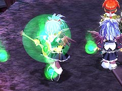
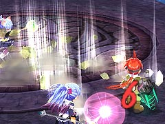
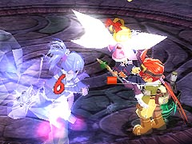
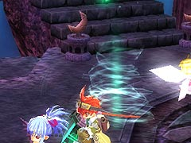
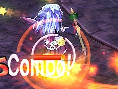
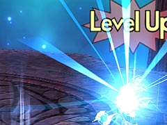
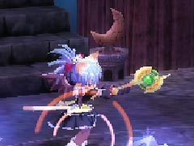
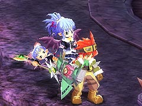
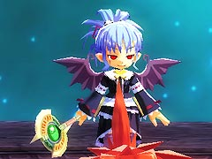

目次 > ゲームについて > 日本Falcom 攻略 > ZWEI II > ボス戦 > ダークアルウェン
らんの眼
ZWEI II (ツヴァイ 2、ZWEI II Plus)
| 概要 | 情報 | 攻略チャート |
| フード交換 | ペットについて | ボス戦 |
| 敵キャラ一覧 | ハンターランク | G-コロッセオ |
| アイテム一覧 | ガジェット一覧 | トレジャー一覧 |
| ダンジョン一覧 | クリアデータ特典 | Plusの追加要素 |
| ZWEI II攻略へ | 目次へ戻る |
| ダークアルウェン |
| ラグナ・オデッサどちらを使っても構いません。巨大なボスと違い、どこを攻撃してもダメージは通るのですが、魔法を連発してくるので、とにかく近づきたくない相手です。 ダークアルウェンが使ってくる魔法は、「地裂の魔法」、「凍結の魔法」、「焦熱の魔法」、「疾風の魔法」です。 行動パターンとして、「地裂の魔法」、「凍結の魔法」、「疾風の魔法」、「焦熱の魔法」をそれぞれ順番に4回ずつ使います。 その後、魔法の名前を言うのですが、その時間は何もしてこないので攻撃のチャンスです。この際、周囲に光の玉のようなものが出ますが、これに触れてもダメージは受けません。   まず「地裂の魔法」ですが、アルウェンのものと違い、正面方向に何本かの衝撃波が走ります。数はランダムのようなので、正面に立っているのは危険です。  「凍結の魔法」はアルウェンのものと同じ性能のようです。食らうと当然動けなくなり、その後のダークアルウェンの攻撃を数発食らう危険があります。  「疾風の魔法」もアルウェンのものと同じ性能のようです。離れていればまず食らいませんが、複数個の竜巻が出るので注意が必要です。  「焦熱の魔法」も困ったことにアルウェンのものと同じ性能です。なので、かなりしぶとく追いかけてくるので、注意した方がいいです。  また、魔法を切り替えた後などに何かを食べて体力を回復することがあります。ここで、Level Up と表示されることがありますが、ダークアルウェンの体力の最大値が増えることはありません。しかし、レベルアップでダークアルェンの防御力が徐々に上がるので、長期戦にならないように注意してください。  ちなみに、ダークアルウェンの体力が少なくなってくると、上の画像のようにアルウェンに耳が生え、グラフィックが若干変化します。グラインドギアに乗っている場合、この変化は、耳だけではなく目も変化します。  |
| 余談 |
| 余談ですが、なぜラグナはダークアルェンが偽者だと気づいたのでしょうか。本人は「契約をしているから、目の前の人間が守るべき者かどうか分かる」・・・なんてカッコイイこと言っているのですが、実際はダークアルウェンの杖が「光の銀杖」ではないからだったためではないかと疑ってしまいます。 戦闘中にダークアルウェンが「極光の魔法」を使ってこないところといい、細かいところまでこだわっているというか、何というか・・・。  |
| 概要 | 情報 | 攻略チャート |
| フード交換 | ペットについて | ボス戦 |
| 敵キャラ一覧 | ハンターランク | G-コロッセオ |
| アイテム一覧 | ガジェット一覧 | トレジャー一覧 |
| ダンジョン一覧 | クリアデータ特典 | Plusの追加要素 |
| ページの上部へ | ZWEI II 攻略へ | 目次へ戻る |